2026-09-25 查证（WebSearch 汇总官网 / OpenTable / Yelp / 本地媒体）。营业时间是网上公布的，实时空位一个都没查到（OpenTable 和餐厅官网本次都没抓下来），标「未核」的请打电话确认。车程是从 Hyatt Regency Maui（Kaʻanapali）出发的估算，没实测。
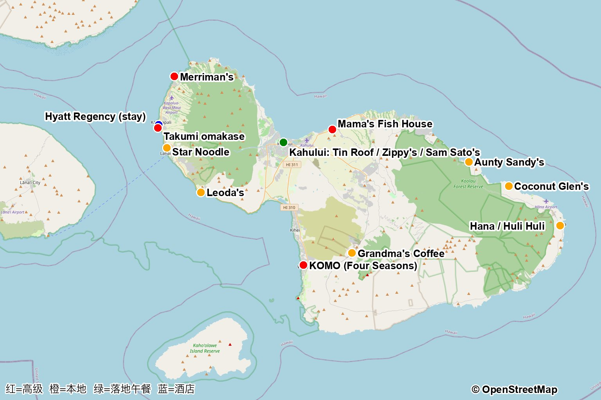
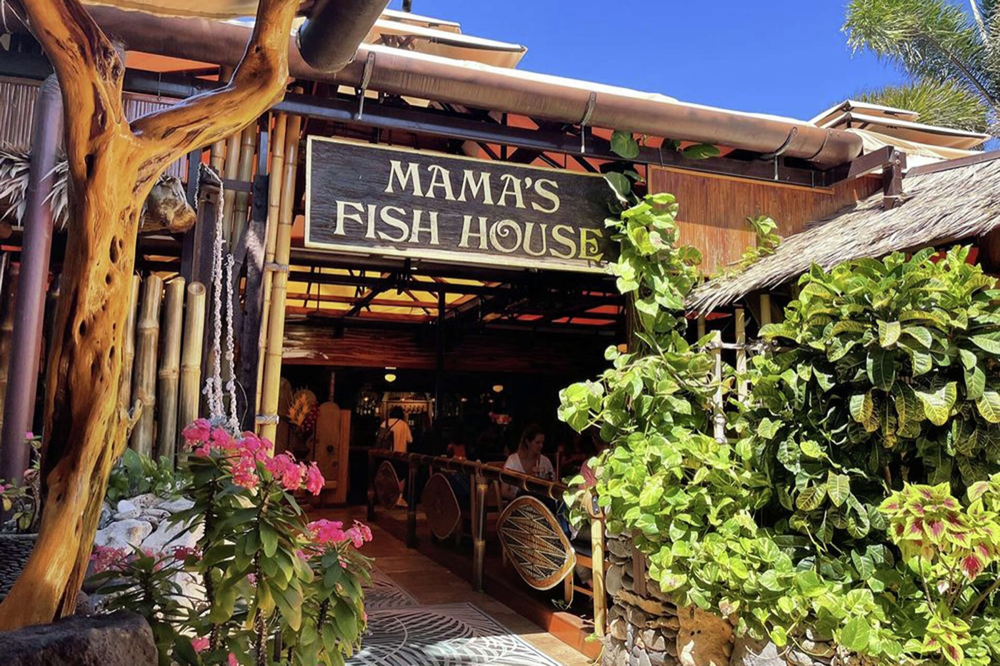
- 地址：799 Poho Pl, Paia · 车程约 60 分钟 - 营业：每天 午餐 11:00–15:30 / 晚餐 16:15–20:30 - 价位：主菜约 $55–95（官网不公布价格，这是媒体估算）；两人连酒估计 $250–400 - 订位：电话 (808) 579-8488 或 官网。官方说可以提前 18 个月订，实际提前 3–6 个月就满。官网写：想要的时段没有，就在前 24–48 小时再查一次（取消会放出来）。 - 不订位的办法（Yelp / Tripadvisor 网友经验，未核）：两个吧台不开放线上预订，walk-in 通常安排到吧台，全套菜单照吃；11:00 开门时到成功率最高；14:30–16:30 有机会吃饮品加前菜；上午打电话问当天晚场，傍晚再打一次。 - 着装：不能穿背心（tank top）；2026-07-13 起 17:00 后在正厅和吧台就座要摘帽（官网）。 - 点什么：当天鱼获（问服务员早上上岸了什么）、招牌 Mama's Stuffed Fish、lilikoi crème brûlée。 - 放哪天：9/29 周二跑完 Hana 回程（晚餐），或 9/28 周一看完日出下山顺路（午餐）。 - 链接：mamasfishhouse.com · 订位说明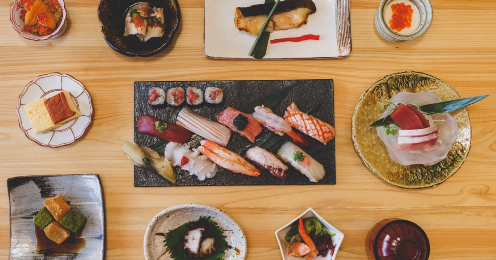
- 地址：2580 Kekaa Dr, Unit J-2（Fairway Shops）· 车程约 5 分钟 - 营业：每天 12:00–21:00；omakase 包间现在每周七天都开 - 价位：Signature Omakase $160／人，最多 17 道，主厨 Eima Yamada。吧台 8 席加一张 4 人桌。 - 订位：takumimaui.com/omakase 网上订，每月 1 号放下个月的位子；电话 (808) 868-0929 · aloha@takumimaui.com。48 小时内取消收 $100／人，所以临期常有人退位，值得今天打电话问 9/25–9/27。 - ⚠️ 忌口：订位备注和入座时都说一遍 「光り物が苦手です（小肌・鯵・鰯・鯖・秋刀魚）」，请他们换成赤身、中腹或大腹、车虾。 - 放哪天：9/25 周五晚或 9/26 周六晚（风雨最大的两天，5 分钟车程）。 - 链接：Omakase 预订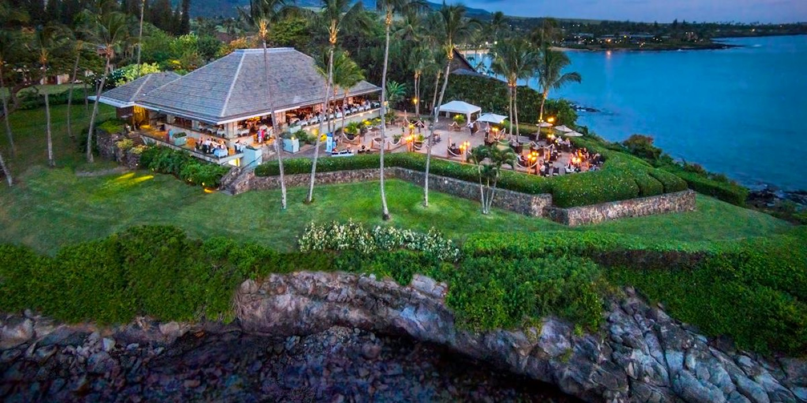
- 地址：1 Bay Club Pl, Kapalua · 车程约 15 分钟 - 营业：每天 16:00 开，最后订位 20:30；Happy Hour 15:00–17:00 - 价位：Yelp 标 $$$$；具体人均未核，按 $100–150／人估 - 订位：官网 / OpenTable，提前 60 天在 HST 0 点放位；电话 (808) 669-6400 · reservations@merrimanshawaii.com - 不订位的办法：海角露天的 The Point Lounge 先到先坐，不接受预订（天气好才开） - 着装：「Casual Elegant」 - 点什么：farm-to-table 的当地鱼、Waipio 芋头系列（菜单未逐项核） - 放哪天：9/27 周日（有风但离得近，The Point 可能关，订室内） - 链接：官网订位 · OpenTable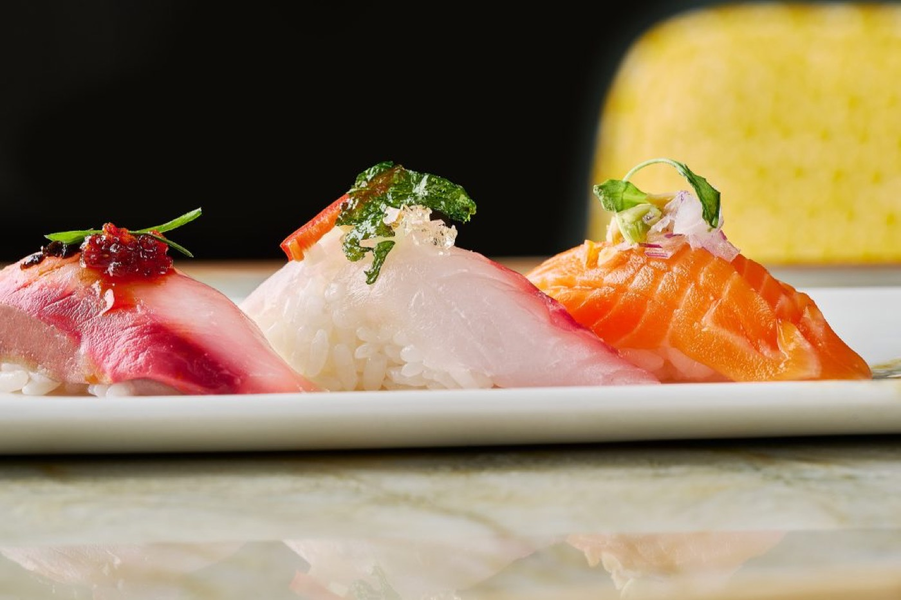
- 地址：3900 Wailea Alanui Dr（Four Seasons 内）· 车程约 55–60 分钟 - 营业：周三到周日晚餐（有 17:00–21:00 和 18:00–21:30 两种说法，未核）；周一周二关 - 价位：omakase $200–300／人，看当晚鱼；每周两次日本空运；主厨池田清邦（Kiyo Ikeda，出身 Morimoto）；14 席寿司吧 - 订位：808-874-8000 / 1-800-311-0630，走 Four Seasons 订位线 - ⚠️ 同样要说 光り物が苦手です - 放哪天：只剩 9/27 周日（周一周二关门，周三要还车） - 链接：KOMO 官网| 店 | 位置／车程 | 营业 | 订位 | 备注 |
|---|---|---|---|---|
| Japengo | Hyatt 店内 | 每晚 17–21 | 808-667-4909 | 泛亚料理加寿司，开放式露台；风暴天最省事，但刮大风时露台可能难受 |
| Son'z Steakhouse | Hyatt 店内（白天是 Swan Court） | 每晚 17–21 | (808) 667-4506 | Prime 牛排加海鲜，湖景天鹅 |
| Roy's Kaanapali | 高尔夫会所，约 5 分钟 | 每天 11–20 | (808) 669-6999 / OpenTable | 夏威夷融合菜老牌，misoyaki butterfish |
| Ka'ana Kitchen | Andaz Wailea，约 60 分钟 | 晚餐 17–21 | 808-573-1234 / OpenTable | 有 Chef's Table |
| Morimoto Maui | Andaz Wailea，约 60 分钟 | 午 12–14:30，晚 17–20:45 | (808) 243-4766 / OpenTable | omakase 目前暂停，只能单点 |
| Ferraro's | Four Seasons Wailea | 11–21 | 808-874-8000 / OpenTable | 海边意大利菜 |
| Spago | Four Seasons Wailea | 17:30–21:30 | (808) 879-2999 / OpenTable | Wolfgang Puck，$$$ |
| ~~Lahaina Grill~~ | 127 Lahainaluna Rd | 关门 | — | 火灾后未复业，无日期 |
| 店 | 位置 | 营业 | 链接／电话 | 为什么去 |
|---|---|---|---|---|
| Monkeypod Kitchen | Whalers Village，Kaʻanapali，约 5 分钟 | 每天 11–22；HH 14:30–17 | OpenTable | Merriman 家的休闲线，披萨、Mai Tai；风暴天近 |
| Star Noodle | 1287 Front St, Lahaina（火区北侧，没烧），约 10 分钟 | 网上时间不一致（未核），晚上 16:30 起 | 官网 · OpenTable · (808) 667-5400 | 面、pork bun；网上说最好提前两周订，可 walk-in |
| Leoda's Kitchen & Pie Shop | 820 Olowalu Village Rd，约 25 分钟 | 每天 10–18 | leodas.com · (808) 662-3600 | 派、三明治；往 Kahului／Wailea 方向顺路 |
| Paia Fish Market | 100 Hana Hwy, Paia | 每天 11–21 | 官网 | Hana 回程或 Mama's 订不上的平替，鱼排、fish taco |
| Nuka | 780 Haiku Rd, Haiku，约 65 分钟 | 周一至周五 11:30–22；周末 16:30–22 | nukamaui.com | 小而好的寿司居酒屋；不接受预订，官网有线上排队 |
| Ululani's Shave Ice | Kahului 333 Dairy Rd（离机场近）／Kihei／Maui Ocean Center | Kahului 每天 10:30–18 | 门店列表 | 最好的刨冰；Lahaina 店已随火灾没了，西边没有分店 |
| Coconut Glen's | Hana Hwy 27.5 英里处，Nahiku | 每天 10:30–17:30（夏季 9–18） | 官网 · (808) 248-4876 | 椰子冰淇淋 |
| Huli Huli Chicken（Koki Beach） | Hana 镇过去一点，Koki Beach 旁 | 每天 11–16（2026-02 资料） | 介绍（无官网） | 烤鸡，Gordon Ramsay 节目去过 |
| Aunty Sandy's Banana Bread | Keʻanae 半岛（约 16 英里处） | 每天 8:30–14:30，常提前卖完 | 官网 | 香蕉面包，早去 |
| Hana Farms | Hana 镇 | 约 7–19（未核） | Hana 餐饮汇总（官网未核） | 香蕉面包、咖啡、水果 |
| ~~Fond~~ | Napili Plaza | Yelp 标 CLOSED（2026-06），其他网站仍写营业，未核 | fondmaui.com | 别专门去 |
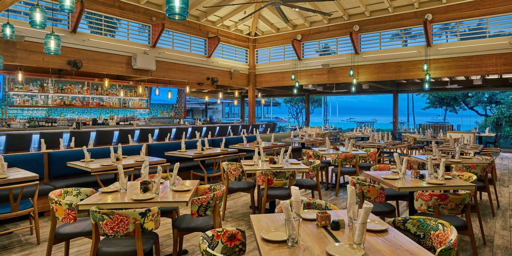
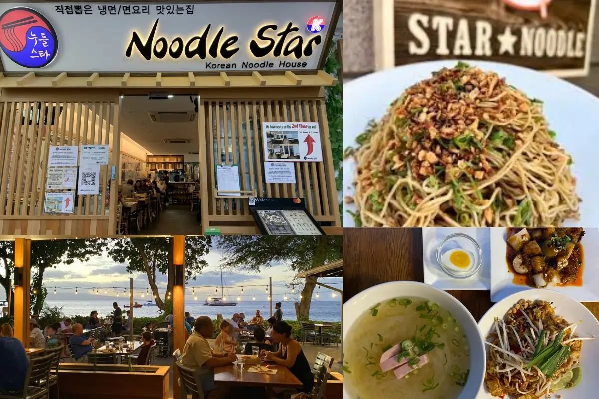
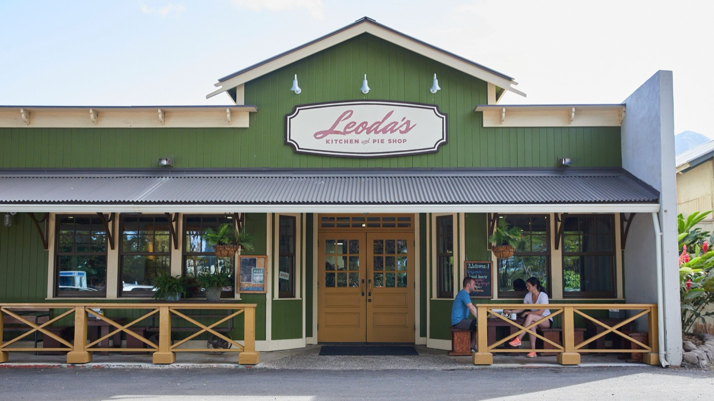
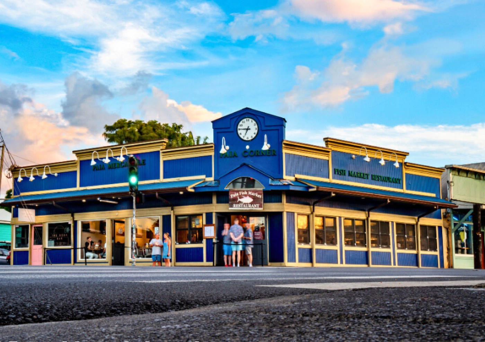
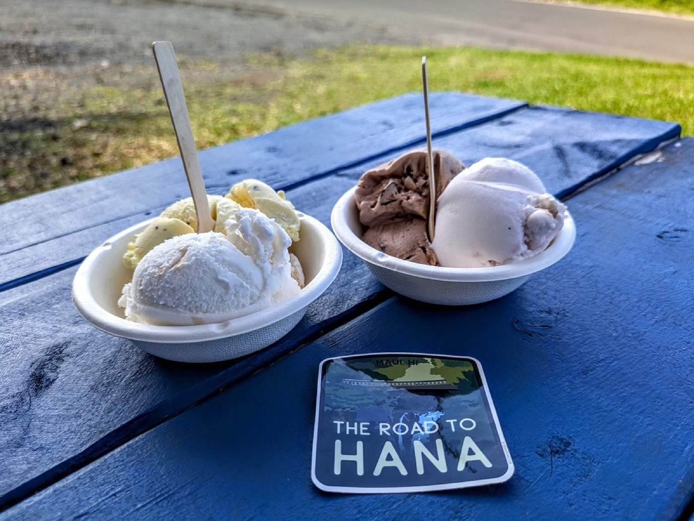
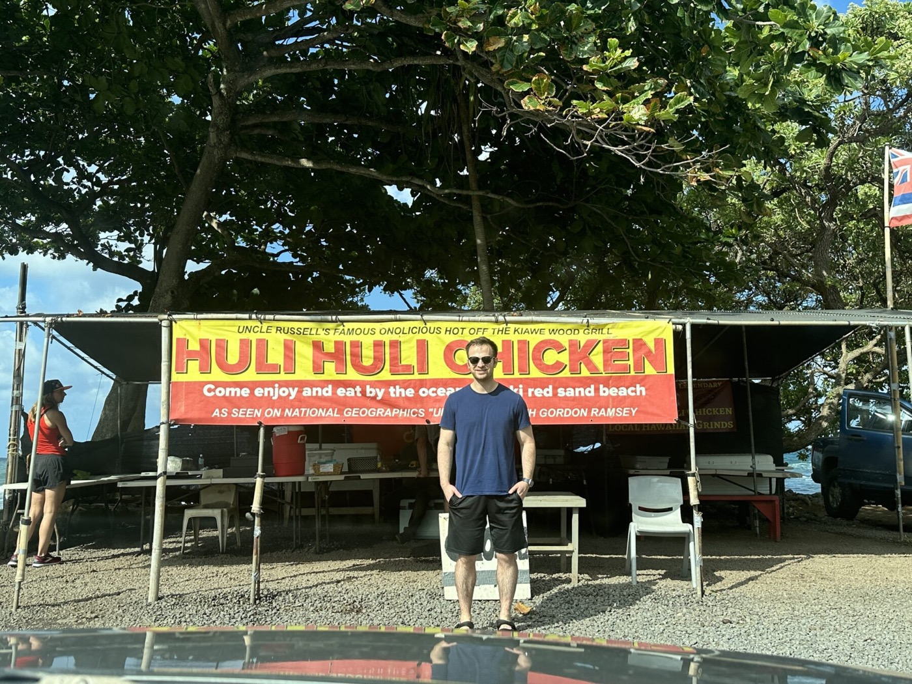
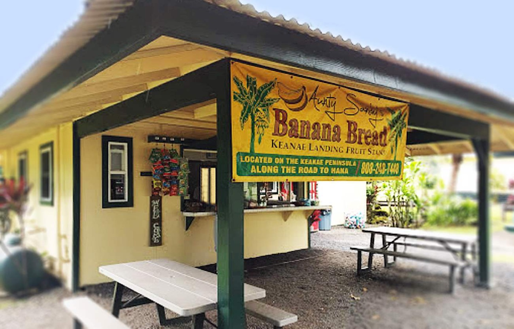
| 店 | 地址 | 今天（周五） | 链接／电话 | 备注 |
|---|---|---|---|---|
| Tin Roof Maui | 360 Papa Pl #116，离机场约 10 分钟 | ✅ 周二至周六 10–20 | tinroofmaui.com · (808) 868-0753 | Sheldon Simeon（Top Chef）的外带店；mochiko chicken、pork belly、poke bowl。首选 |
| Sam Sato's | 1750 Wili Pa Loop, Wailuku | ✅ 周二至周六 7–14 | Yelp（无官网） | 只收现金；dry mein 配一碗高汤、manju |
| Zippy's Kahului | 15 Hookele St（不在 Kaahumanu Ave） | ✅ 每天 5–22 | zippys.com · (808) 856-7599 | 能坐下吃；chili、炸鸡 |
| Pearl's Korean BBQ | Queen Kaʻahumanu Center 美食广场 | ✅ 周一至周六 10–20 | 门店 | 韩式烤肉便当 |
| Oki's Seafood Corner（Foodland 内） | 90 Kane St, Kahului | ✅ 每天 5–22 | Foodland | poke 按磅买，代替下面那家 |
| Tasaka Guri Guri | Maui Mall, 70 E Kaʻahumanu Ave | ✅ 周一至周六 10–16，周日关 | Maui Mall · 808-871-4513 | 百年老店的冰沙甜点，饭后 |
| ~~Poke by the Pound~~ | 322 Kalihi St | — | — | 这家在檀香山（Oahu），不在 Maui，别导航过去 |
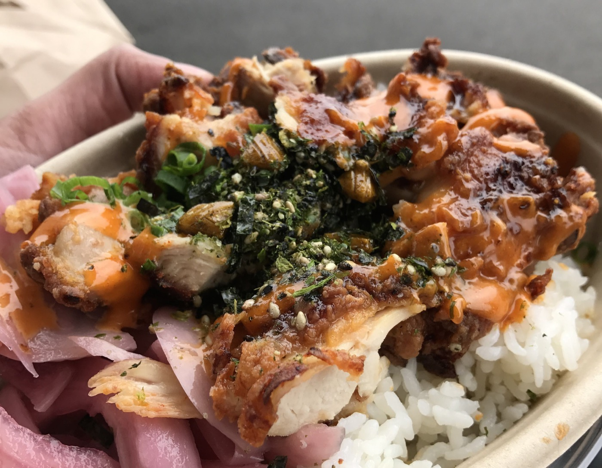
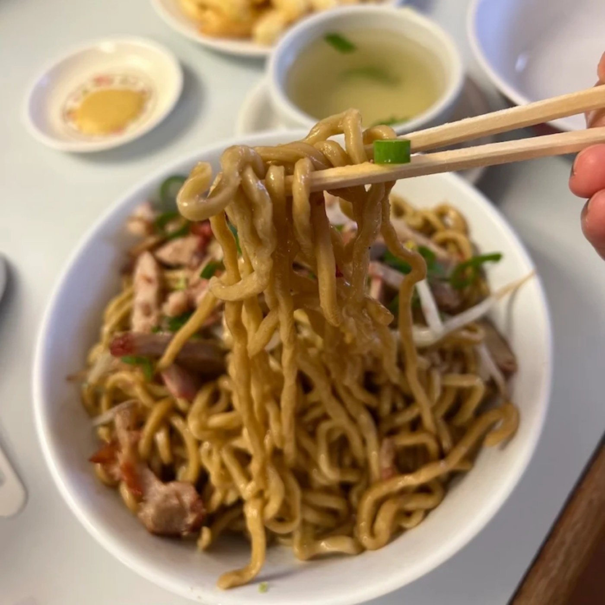
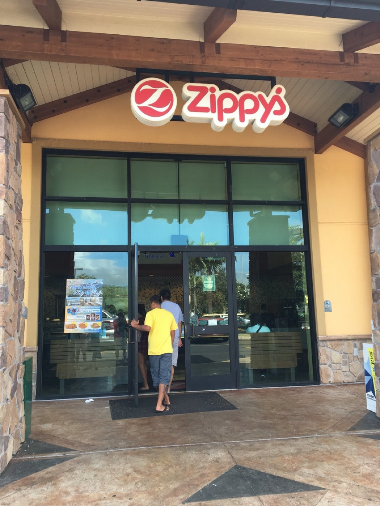
| 日期 | 天气 | 早 | 午 | 晚 |
|---|---|---|---|---|
| 9/25 周五 | 大雨，西 Maui 阵风 40–75 mph | — | Tin Roof（外带）或 Sam Sato's；饭后 Tasaka Guri Guri 或 Ululani's Kahului | 回 Hyatt：Japengo，或 Takumi（5 分钟，要有位子） |
| 9/26 周六 | 同上，潜水大概率取消 | Swan Court（Hyatt 早餐 6:30–11） | Umalu（泳池边，11–17）／Monkeypod | ⭐ Takumi omakase 或 Son'z |
| 9/27 周日 | 有风 | — | Leoda's（顺路） | Merriman's Kapalua（近）；想吃高端寿司而且有位子就开 1 小时去 KOMO（这周只有今天能去） |
| 9/28 周一 | 晴 | 若去 Haleakalā 看日出：下山吃 Grandma's Coffee House（Keokea，7–14）。Kula Lodge 餐厅被火烧了，现在只有 food truck（8–15） | Mama's 11:00 开门直接去（从 Kula 下山约 30–40 分钟，估算）或 Nuka（11:30 起） | 回西边：Star Noodle 或 Roy's |
| 9/29 周二 | 晴 | Paia 出发；Aunty Sandy's（Keʻanae，8:30 起，早去） | Coconut Glen's → Waiʻānapanapa → Koki Beach Huli Huli Chicken（11–16）／Hana Farms | ⭐ Mama's Fish House 晚餐（回程经过 Paia）；订不上就 Paia Fish Market（21:00 关） |
| 9/30 周三 | 晴 | 退房 | 12:30 前还车：约 11:00 吃 Tin Roof（周三 10:00 开）或 Sam Sato's（周三 7–14），离机场都在 15 分钟内 | — |
Haleakalā 如果改到 9/27 周日看日出：Grandma's 周日照开（每天 7–14），晚餐照上表。
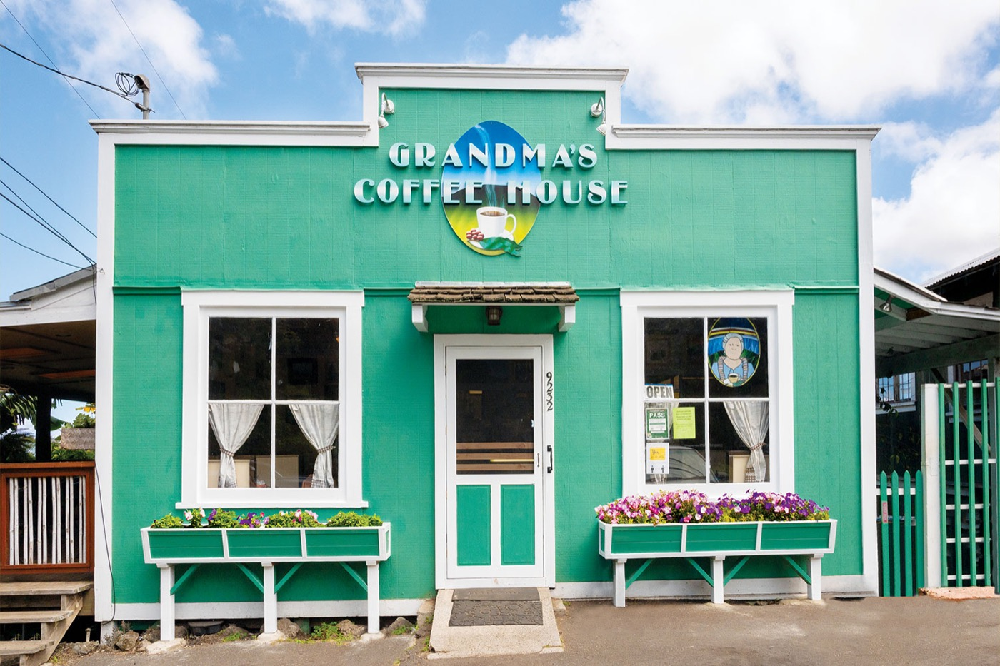
| 优先 | 打给谁 | 电话 | 说什么 |
|---|---|---|---|
| 1 | Mama's Fish House | (808) 579-8488 | 2 人，9/29 周二晚 17:30–19:30 或 9/28 周一午餐；没有就问 waitlist／cancellation 怎么排，并记下「前 24–48 小时再查一次」 |
| 2 | Takumi Maui | (808) 868-0929 | 2 人 omakase，9/25 或 9/26 晚上；说 光り物が苦手です（小肌・鯵・鰯・鯖・秋刀魚），喜欢车虾、鲔鱼 |
| 3 | Merriman's Kapalua | (808) 669-6400 | 2 人，9/27 周日晚，室内靠窗 |
| 4（可选） | KOMO / Four Seasons | 808-874-8000 | 9/27 周日寿司吧 2 位，同样说忌口 |
| — | ~~Lahaina Grill~~ | — | 不用打，还关着 |
Japengo 和 Son'z 在酒店内，当天找礼宾（Hyatt）订就行：808-667-4909 / (808) 667-4506。
图片来自公开网页搜索结果，仅作辨认用；版权归原作者。
生成于 2026-09-25 · 营业时间与订位以电话确认为准